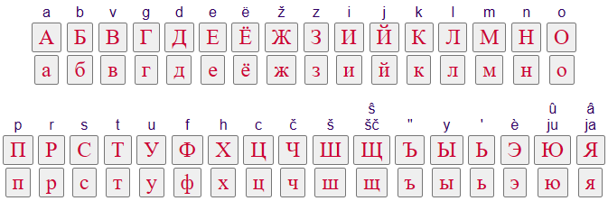

📚 Kattava Venäjän Kielioppi
Tervetuloa tutustumaan venäjän kielen kielioppiin! Tämä sivu pyrkii tarjoamaan kattavan yleiskuvan venäjän kieliopin keskeisistä osa-alueista sääntöineen ja esimerkkeineen. Sivusto soveltuu niin alkeiden kertaamiseen kuin syvempäänkin opiskeluun ja kielioppiasioiden tarkistamiseen.
Käytä vasemman reunan sisällysluetteloa navigoidaksesi eri aiheiden välillä. Oikeaan alareunaan selatessa ilmestyvästä nuolesta klikkaamalla pääset takaisin sivun yläreunaan.
🔤 Aakkoset ja Ääntäminen (Lyhyt katsaus)
Venäjän kieli käyttää kyrillistä aakkostoa (русский алфавит tai азбука), joka koostuu 33 kirjaimesta: 10 vokaalia (а, е, ё, и, о, у, ы, э, ю, я), 21 konsonanttia ja kaksi merkkiä (ь – pehmeä merkki ja ъ – kova merkki), jotka eivät itsessään äänny mutta vaikuttavat edeltävän konsonantin ääntämiseen tai erottavat äänteitä. Jokaisella kirjaimella on painettu (печатный) ja kaunokirjoitusmuoto (рукописный), joista kaunokirjoitus poikkeaa osittain huomattavastikin painetusta ja on yleinen käsin kirjoitettaessa. Oikea ääntäminen on keskeistä, ja siihen vaikuttavat useat säännöt, kuten:
- Paino (ударение): Sanapaino on vapaa ja liikkuva, eli se voi sijaita eri tavuilla eri sanoissa ja sanan eri muodoissa. Paino on opittava sanakohtaisesti.
- Vokaalireduktio (редукция гласных): Painottomissa tavuissa vokaalit äännetään lyhyemmin ja eri tavalla kuin painollisina. Yleisimmät muutokset ovat painoton /o/ → [a] (esim. хорошо [харашо́]) ja painottomat /е/, /я/ → [и] (esim. язык [йиз`ы́к]).
- Liudennus (смягчение согласных): Useimmilla konsonanteilla on kova (твёрдый) ja pehmeä (мягкий) vastine. Liudennus ilmaistaan seuraavalla pehmeällä vokaalilla (е, ё, и, ю, я) tai pehmeällä merkillä (ь). Esim. мат [mat] (matto) vs. мать [мат’] (äiti).
- Soinnillisuusassimilaatio (озвончение/оглушение): Konsonantin soinnillisuus voi muuttua viereisen konsonantin vaikutuksesta tai sanan lopussa. Sanan lopussa soinnilliset konsonantit (б, в, г, д, ж, з) ääntyvät soinnittomina vastineinaan (п, ф, к, т, ш, с). Esim. зуб [зуп] (hammas). Konsonanttiyhtymissä viimeisen konsonantin soinnillisuus määrää edeltävien soinnillisuuden. Esim. просьба [про́з’ба] (pyyntö), вокзал [вагза́л] (rautatieasema).

Tämä osio antaa vain pintapuolisen katsauksen. Tarkempaan ääntämiseen ja sen sääntöihin kannattaa perehtyä erikseen.
📖 Sanaluokat
Venäjän sanat jaetaan eri luokkiin niiden tehtävien ja taivutuksen perusteella.
Substantiivit (Имена существительные)
Substantiivit nimeävät olioita, asioita ja käsitteitä.
🧠 Suvut ja tunnistaminen
Jokaisella venäjän substantiivilla on yksi kolmesta kieliopillisesta suvusta: maskuliini (мужской род), feminiini (женский род) tai neutri (средний род).
- Maskuliinit (м.): Päättyvät yleensä konsonanttiin (стол - pöytä, дом - talo) tai -й (музей - museo, чай - tee). Myös jotkin -ь päätteiset (словарь - sanakirja, день - päivä) ja miespuolisia henkilöitä tarkoittavat -а/-я päätteiset (папа - isä, дядя - setä, мужчина - mies).
- Feminiinit (ж.): Päättyvät yleensä -а (книга - kirja, мама - äiti) tai -я (земля - maa, неделя - viikko). Myös valtaosa -ь päätteisistä (ночь - yö, дверь - ovi, тетрадь - vihko).
- Neutrit (ср.): Päättyvät yleensä -о (окно - ikkuna, слово - sana) tai -е (море - meri, поле - kenttä). Myös kymmenen -мя päätteistä substantiivia (имя - nimi, время - aika).
Suku vaikuttaa sanan taivutukseen sekä siihen liittyvien adjektiivien, pronominien ja verbien (preteritissä) muotoihin.
🧍♂️ Elollisuus (Animacy)
Substantiivit jaetaan kieliopillisesti elollisiin (одушевлённые) ja elottomiin (неодушевлённые). Tämä vaikuttaa akkusatiivin muotoon maskuliineilla (yksikkö ja monikko) ja kaikkien sukujen monikossa.
- Elolliset: Ihmiset, eläimet. Akkusatiivi = Genetiivi. (Я вижу студента. Я вижу студентов.)
- Elottomat: Esineet, kasvit, abstraktit käsitteet. Akkusatiivi = Nominatiivi. (Я вижу стол. Я вижу столы.)
Poikkeuksia ja rajatapauksia esiintyy (esim. 'nukke' (кукла) on kieliopillisesti elollinen).
🧳 Sijamuodot (Cases / Падежи)
Venäjässä on kuusi sijamuotoa, jotka ilmaisevat sanan tehtävää lauseessa. Jokaisella sijalla on omat kysymyssanansa ja päätteensä.
- Nominatiivi (Именительный): Kuka? Mikä? (кто? что?). Perusmuoto, lauseen subjekti. Книга лежит на столе.
- Genetiivi (Родительный): Kenen? Minkä? Ketä? Mitä? (кого? чего?). Omistus, puuttuminen (нет), määrä, osa jostakin, vertailu, monien prepositioiden kanssa (у, из, от, до, без...). У меня нет книги.
- Datiivi (Дательный): Kenelle? Mille? (кому? чему?). Epäsuora objekti, kohde, vastaanottaja, ikä, tarve (нужно), miellyttäminen (нравится), monien prepositioiden kanssa (к, по). Я дал книгу студенту. Мне 20 лет.
- Akkusatiivi (Винительный): Kenet? Mitä? (кого? что?). Suora objekti, liikkeen kohde prepositioiden в, на, за, под kanssa. Я читаю книгу. Я иду в парк.
- Instrumentaali (Творительный): Kenellä? Millä? Kenen kanssa? Minkä kanssa? (кем? чем?). Väline, tapa, tekijä passiivissa, ammatti/tila (быть, стать kanssa), monien prepositioiden kanssa (с, над, под, перед, за, между). Я пишу ручкой. Я говорю с другом. Он стал врачом.
- Prepositionaali (Предложный): Kenestä? Mistä? Missä? (о ком? о чём? где?). Käytetään vain prepositioiden kanssa: о/об/обо (koskien), в (sisässä), на (päällä), при (aikaan, yhteydessä). Я думаю о книге. Книга лежит на столе.
📚 Taivutusluokat (Declensions / Склонения)
Substantiivit jaetaan kolmeen päätaivutusluokkaan (deklinaatioon) niiden suvun ja nominatiivin päätteen perusteella. Tämä vaikuttaa sijapäätteisiin.
I Deklinaatio
Useimmat -а/-я päätteiset feminiinit ja maskuliinit (esim. папа, дядя).
| Sija | Yksikkö | Monikko |
|---|---|---|
| Nom. | книга | книги |
| Gen. | книги | книг* |
| Dat. | книге | книгам |
| Akk. | книгу | книги* |
| Ins. | книгой (-ою) | книгами |
| Prep. | (о) книге | (о) книгах |
*) Monikon genetiivissä pääte usein katoaa (nollapääte). Monikon akkusatiivi kuten nom. (eloton) tai gen. (elollinen).
Huom: -г, -к, -х, -ж, -ч, -ш, -щ vartaloisten sanojen jälkeen päätteissä voi olla vokaalin/kirjaimen vaihdoksia (ы → и, о → е, ой → ей). Esim. подруга (ystävätär): G. подруги, D. подруге...
II Deklinaatio
Useimmat maskuliinit (konsonantti- tai -й-päätteiset) ja neutrit (-о/-е-päätteiset).
| Sija | стол (m) | музей (m) | окно (n) | море (n) | столы (mon) | музеи (mon) | окна (mon) | моря (mon) |
|---|---|---|---|---|---|---|---|---|
| Nom. | стол | музей | окно | море | столы | музеи | окна | моря |
| Gen. | стола | музея | окна | моря | столов | музеев | окон* | морей |
| Dat. | столу | музею | окну | морю | столам | музеям | окнам | морям |
| Akk. | стол/стола** | музей/музея** | окно | море | столы/столов** | музеи/музеев** | окна | моря |
| Ins. | столом | музеем | окном | морем | столами | музеями | окнами | морями |
| Prep. | (о) столе | (о) музее | (об) окне | (о) море | (о) столах | (о) музеях | (об) окнах | (о) морях |
*) Monikon genetiivissä usein nollapääte tai -ов/-ев/-ей.
**) Akkusatiivi kuten nom. (eloton) tai gen. (elollinen).
Huom: Vokaalivaihtelut (o/e) päätteissä riippuvat edeltävästä konsonantista (kova/pehmeä/sisisijainti) ja painosta.
III Deklinaatio
Feminiinit, jotka päättyvät -ь (pehmerkkiin).
| Sija | Yksikkö | Monikko |
|---|---|---|
| Nom. | ночь | ночи |
| Gen. | ночи | ночей |
| Dat. | ночи | ночам |
| Akk. | ночь | ночи* |
| Ins. | ночью | ночами |
| Prep. | (о) ночи | (о) ночах |
*) Monikon akkusatiivi kuten nom. (eloton) tai gen. (elollinen).
Huom: Yksikön genetiivi, datiivi ja prepositionaali ovat samamuotoisia.
👥 Monikon muodostus ja taivutus
Monikon nominatiivin päätteet:
- I Dekl.: -ы / -и (книги, земли)
- II Dekl. Mask.: -ы / -и (столы, музеи). Poikkeuksellinen -а/-я (профессора, учителя, города).
- II Dekl. Neut.: -а / -я (окна, моря). Poikkeuksellinen -и (упражнения).
- III Dekl.: -и (ночи)
Monikon genetiivissä päätteet vaihtelevat:
- Nollapääte (usein I dekl. ja II dekl. neutrit): книг, земель, окон, море (lisätään -ей й:n jälkeen). Joskus lisätään "täytevokaali" (девочек, песен).
- -ов: Usein II dekl. maskuliinit kovan konsonantin jälkeen (столов).
- -ев: Usein II dekl. maskuliinit -й, -ь, -ц, -ч, -ж, -ш, -щ jälkeen (музеев, врачей).
- -ей: pehmeävartaloiset neutrit (море → морей) ja III deklinaation substantiivit (ночь → ночей)
Muissa monikon sijoissa päätteet ovat melko säännöllisiä (Dat. -ам/-ям, Akk. = Nom./Gen., Ins. -ами/-ями, Prep. -ах/-ях).
✨ Erityistaivutuksia
- -мя päätteiset neutrit (10 kpl): Vartaloon lisätään -ен- taivutuksessa (paitsi nom./akk. yks.). Esim. имя: G. имени, D. имени, I. именем, P. об имени. Monikko: N. имена, G. имён, D. именам...
- путь (m - tie): Taipuu kuten III deklinaation feminiini (G/D/P пути, I путём).
- мать (f - äiti), дочь (f - tytär): Vartaloon lisätään -ер- taivutuksessa (paitsi nom./akk. yks.). Esim. мать: G/D/P матери, I матерью. Monikko: N. матери, G. матерей...
- Monikkosanat (Pluralia tantum): Esiintyvät vain monikossa (ножницы - sakset, очки - silmälasit, деньги - raha, брюки - housut). Taipuvat monikon kaavojen mukaan.
- Yksikkösanat (Singularia tantum): Esiintyvät vain yksikössä (молоко - maito, сахар - sokeri, мебель - huonekalut).
🚫 Taipumattomat substantiivit
Jotkin, usein vierasperäiset, substantiivit eivät taivu lainkaan. Niiden sija päätellään asiayhteydestä.
Esimerkkejä: пальто (takki), метро (metro), кофе (kahvi), такси (taksi), меню (ruokalista), Сочи (Sotši), Хельсинки (Helsinki).
Niiden suku määräytyy yleensä merkityksen (mies/nainen), yleisemmän kategorian (пальто = оно) tai pääteäänteen perusteella (usein neutri, jos päättyy -о/-е/-у/-ю; maskuliini jos viittaa mieheen; feminiini jos viittaa naiseen).
🎨 Adjektiivit (Имена прилагательные)
Adjektiivit kuvailevat substantiiveja ja mukautuvat pääsanansa sukuun, lukuun ja sijaan.
🔄 Taivutus (Suku, Luku, Sija)
Adjektiivin perusmuoto (nominatiivin yksikön maskuliini) päättyy yleensä -ый, -ой tai -ий.
Kovavartaloiset (-ый, -ой)
Vartalo päättyy kovaan konsonanttiin. -ой pääte on aina painollinen.
| Sija | Mask. | Neut. | Fem. | Monikko |
|---|---|---|---|---|
| Nom. | новый, молодой | новое, молодое | новая, молодая | новые, молодые |
| Gen. | нового, молодого | нового, молодого | новой, молодой | новых, молодых |
| Dat. | новому, молодому | новому, молодому | новой, молодой | новым, молодым |
| Akk. | =N/G | =N | новую, молодую | =N/G |
| Ins. | новым, молодым | новым, молодым | новой (-ою), молодой (-ою) | новыми, молодыми |
| Prep. | (о) новом, (о) молодом | (о) новом, (о) молодом | (о) новой, (о) молодой | (о) новых, (о) молодых |
Akkusatiivi = Nominatiivi (eloton pääsana), Akkusatiivi = Genetiivi (elollinen pääsana).
Pehmeävartaloiset (-ий, -ний)
Vartalo päättyy pehmeään konsonanttiin (usein -н-).
| Sija | Mask. | Neut. | Fem. | Monikko |
|---|---|---|---|---|
| Nom. | синий | синее | синяя | синие |
| Gen. | синего | синего | синей | синих |
| Dat. | синему | синему | синей | синим |
| Akk. | =N/G | =N | синюю | =N/G |
| Ins. | синим | синим | синей (-ею) | синими |
| Prep. | (о) синем | (о) синем | (о) синей | (о) синих |
Sisisijainnit ja G/K/H-vartalot
Jos adjektiivin vartalo päättyy г, к, х, ж, ч, ш, щ:
- Pääte on -ий (ei -ый), mutta taipuu pääosin kovavartaloisten mukaan.
- Kirjoitussääntö: Näiden kirjainten jälkeen ei kirjoiteta ы, vaan и. (Esim. monikko русские, ei русскые).
- Painoton -ое/-ого/-ому/-ом muuttuu muotoon -ее/-его/-ему/-ем (esim. хорошее утро). Painollisena säilyy -о- (esim. большое окно).
| Sija | Mask. | Neut. | Fem. | Monikko |
|---|---|---|---|---|
| Nom. | русский, хороший | русское, хорошее | русская, хорошая | русские, хорошие |
| Gen. | русского, хорошего | русского, хорошего | русской, хорошей | русских, хороших |
📝 Lyhyt muoto (Краткая форма)
Laatuadjektiiveilla (какой?) on pitkän muodon lisäksi lyhyt muoto, jota käytetään predikatiivina (lausuman osana).
- Muodostus: Pitkästä maskuliinimuodosta poistetaan pääte (-ый/-ий/-ой). Maskuliinissa voi tulla "liikkuva vokaali" o/e (интересен). Feminiini: + -а (красива). Neutri: + -о (красиво). Monikko: + -ы/-и (красивы).
- Käyttö:
- Ilmaisee usein tilapäistä ominaisuutta tai tilaa (Он болен. - Hän on sairaana [nyt]). Pitkä muoto voi viitata pysyvämpään ominaisuuteen (Он больной человек. - Hän on sairas ihminen).
- Voi ilmaista liiallista ominaisuutta (Эти туфли мне малы. - Nämä kengät ovat minulle [liian] pienet).
- Pakollinen joidenkin ilmaisujen kanssa (рад - iloinen, должен - täytyy, готов - valmis).
- Ei taivu sijoissa.
Esim. красивый (kaunis) → красив (m), красива (f), красиво (n), красивы (mon)
📈 Vertailumuodot (Степени сравнения)
Komparatiivi (Сравнительная степень)
Ilmaisee suurempaa määrää ominaisuutta ("-mpi").
- Yksinkertainen muoto: Adjektiivin vartalo + pääte -ее/-ей (красивее) tai -е (konsonanttivaihtelu mahdollinen: громкий → громче, дорогой → дороже). Tämä muoto ei taivu ja sitä käytetään predikatiivina tai adverbina. Vertailusana: чем (kuin). Этот дом красивее, чем тот.
- Yhdysmuoto: более/менее (enemmän/vähemmän) + adjektiivi perusmuodossa. Taipuu normaalisti. Это более красивая книга.
- Epäsäännöllisiä: хороший → лучше (parempi), плохой → хуже (huonompi), большой → больше (isompi), маленький → меньше (pienempi), старый → старше (vanhempi, ihmisistä)/старее (vanhempi, asioista), молодой → младше (nuorempi)/моложе.
Superlatiivi (Превосходная степень)
Ilmaisee suurinta määrää ominaisuutta ("-in").
- Yksinkertainen muoto: Adjektiivin vartalo + pääte -ейш-/-айш- (painon mukaan). Taipuu kuten tavallinen adjektiivi. Usein kirjakielinen. Esim. красивейший (kaunein), высочайший (korkein).
- Yhdysmuoto (yleisin): самый/самая/самое/самые + adjektiivi perusmuodossa. Taipuu normaalisti. Это самая красивая книга.
- Muita tapoja: Komparatiivi + всех/всего (kaikkia/kaikkea). Он умнее всех. (Hän on kaikista älykkäin). Prefiksi наи- + yksinkertainen superlatiivi (kirjakielinen): наилучший (paras).
🔗 Relatiiviset ja omistusadjektiivit
- Relatiiviset adjektiivit (относительные): Kuvaavat materiaalia, alkuperää, käyttötarkoitusta tms. Eivät yleensä voi muodostaa lyhyttä muotoa tai vertailuasteita. Esim. деревянный (puinen), московский (moskovalainen), научный (tieteellinen).
- Omistusadjektiivit (притяжательные): Ilmaisevat omistajaa. Päätteet -ов/-ев (isän-), -ин/-ын (äidin-), -ий/-ья/-ье/-ьи (eläimen-). Taipuvat erityisellä tavalla. Esim. отцов дом (isän talo), мамина книга (äidin kirja), лисья нора (ketunpesä). Nykykielessä usein korvataan genetiivirakenteella (дом отца, книга мамы).
🙋♂️ Pronominit (Местоимения)
Pronominit korvaavat substantiiveja tai adjektiiveja.
👤 Henkilöpronominit (Личные)
Viittaavat keskustelun osapuoliin tai mainittuihin henkilöihin/asioihin.
| Nom. | Gen. | Dat. | Akk. | Ins. | Prep. |
|---|---|---|---|---|---|
| я (minä) | меня | мне | меня | мной (-ою) | (обо) мне |
| ты (sinä) | тебя | тебе | тебя | тобой (-ою) | (о) тебе |
| он (hän m.) | (н)его | (н)ему | (н)его | (н)им | (о) нём |
| она (hän f.) | (н)её | (н)ей | (н)её | (н)ей (-ею) | (о) ней |
| оно (se n.) | (н)его | (н)ему | (н)его | (н)им | (о) нём |
| мы (me) | нас | нам | нас | нами | (о) нас |
| вы (te) | вас | вам | вас | вами | (о) вас |
| они (he) | (н)их | (н)им | (н)их | (н)ими | (о) них |
Huom: Preposition jälkeen 3. persoonan pronomineihin lisätään eteen н- (у него, к ней, с ними). Вы voi tarkoittaa myös kohteliasta yksikön sinuttelua.
🔄 Refleksiivipronomini себя
Viittaa lauseen subjektiin itseensä. Ei nominatiivia, sukuja eikä lukua. Taipuu sijoissa:
- Gen/Akk: себя
- Dat: себе
- Ins: собой (-ою)
- Prep: (о) себе
Esim. Он говорит только о себе. (Hän puhuu vain itsestään.) Возьми книгу с собой. (Ota kirja mukaasi.)
🔑 Omistuspronominit (Притяжательные)
мой, твой, наш, ваш, свой
Taipuvat kuten adjektiivit suvussa, luvussa ja sijassa. Viittaavat omistajaan.
- мой, моя, моё, мои (minun)
- твой, твоя, твоё, твои (sinun)
- наш, наша, наше, наши (meidän)
- ваш, ваша, ваше, ваши (teidän/Teidän)
- свой, своя, своё, свои (oma): Refleksiivinen omistuspronomini. Viittaa lauseen subjektin omistamaan asiaan riippumatta subjektin persoonasta. Korvaa usein pronominit мой, твой, наш, ваш, kun omistaja on subjekti. Я читаю свою книгу. (Luen omaa kirjaani.) Она любит своего брата. (Hän rakastaa omaa veljeään.)
Esim. мой: N. мой/моя/моё/мои, G. моего/моей/моего/моих, D. моему/моей/моему/моим...
его, её, их
Nämä ovat 3. persoonan henkilöpronominien genetiivimuotoja, mutta toimivat myös omistuspronomineina ("hänen", "heidän"). Ne eivät taivu, kun ne ovat omistuspronominin roolissa.
Esim. Это его книга. (Tämä on hänen [m.] kirjansa.) Я видел его книгу. (Näin hänen [m.] kirjansa.) Мы говорили о его книге. (Puhuimme hänen [m.] kirjastaan.)
👉 Osoittavat pronominit (Указательные)
- этот, эта, это, эти (tämä, nämä): Viittaa lähellä olevaan tai juuri mainittuun. Taipuu kuten adjektiivi. N. этот/эта/это/эти, G. этого/этой/этого/этих...
- тот, та, то, те (tuo, nuo, se, ne): Viittaa kauempana olevaan tai aiemmin mainittuun. Taipuu erityisellä tavalla. N. тот/та/то/те, G. того/той/того/тех, D. тому/той/тому/тем...
- такой, таков (sellainen): Kuvaa laatua. Такой taipuu adjektiivin tavoin, таков on lyhyt muoto.
Pelkkä это toimii usein predikatiivina tai subjektina ("Tämä on...", "Se on..."). Se ei taivu tässä roolissa: Это мой дом. Это мои книги.
❓ Kysyvät ja relatiivipronominit (Вопросительные и относительные)
Käytetään kysymyksissä ja sivulauseiden (relatiivilauseiden) alussa.
- кто (kuka): Viittaa henkilöihin. Taipuu: G. кого, D. кому, A. кого, I. кем, P. (о) ком.
- что (mikä): Viittaa asioihin. Taipuu: G. чего, D. чему, A. что, I. чем, P. (о) чём.
- какой (mikä, millainen): Kysyy laatua. Taipuu kuin adjektiivi.
- который (joka, kumpi): Käytetään relatiivilauseissa viittaamaan edeltävään sanaan. Taipuu kuin adjektiivi suvussa, luvussa ja sijassa relatiivilauseen sisällä. Myös kysyvä "kumpi?".
- чей, чья, чьё, чьи (kenen): Kysyy omistajaa. Taipuu erityisellä tavalla.
- сколько (kuinka monta/paljon): Kysyy määrää. Vaatii genetiivin. Taipuu itsekin (скольких, скольким...).
Esim. Кто это? Что ты делаешь? Дом, который я вижу...
✔️ Määrittävät pronominit (Определительные)
Tarkentavat tai yleistävät.
- весь, вся, всё, все (koko, kaikki): Taipuu erityisellä tavalla. N. весь/вся/всё/все, G. всего/всей/всего/всех...
- сам, сама, само, сами (itse): Korostaa subjektia. Taipuu. N. сам/сама/само/сами, G. самого/самой/самого/самих...
- самый, самая, самое, самые (itse, juuri se; superlatiivin osa): Taipuu kuin adjektiivi.
- каждый (jokainen), любой (kuka/mikä tahansa), иной (toinen, erilainen): Taipuvat kuin adjektiivit.
🚫 Kieltopronominit (Отрицательные)
Muodostetaan lisäämällä не- (painollinen) tai ни- (painoton) kysyviin pronomineihin. Vaativat lauseeseen yleensä myös не-kieltopartikkelin (kaksoiskielto).
- никто́ (ei kukaan), ничто́ (ei mikään): Taipuvat kuten кто, что. Я никого́ не видел.
- не́кого (ei ketään [tekemään]), не́чего (ei mitään [tekemistä]): Erityisrakenne, jossa tekijä puuttuu. Vain epäsuorat sijat. Мне не́кого спросить. (Minulla ei ole ketään, jolta kysyä.)
- никако́й (ei minkäänlainen): Taipuu kuin adjektiivi. У меня нет никаки́х идей.
- ниче́й (ei kenenkään): Taipuu kuin чей.
Jos kieltopronominin ja sitä seuraavan sanan välissä on prepositio, ни-/не- ja pronomini kirjoitetaan erikseen: ни у кого (ei kenelläkään), не с кем (ei kenenkään kanssa).
❓ Indefiniittipronominit (Неопределённые)
Viittaavat epämääräiseen henkilöön tai asiaan. Muodostetaan kysyvistä pronomineista partikkeleilla -то, -нибудь, кое-.
- -то: Viittaa puhujalle tunnettuun, mutta nimeämättömään asiaan/henkilöön. Кто-то пришёл. (Joku tuli.)
- -нибудь: Viittaa tuntemattomaan, epämääräiseen, keneen/mihin tahansa. Usein kysymyksissä, ehdoissa, tulevaisuudessa. Скажи мне что-нибудь. (Sano minulle jotakin.)
- кое-: Viittaa puhujalle tunnettuun, mutta kuulijalle salattuun. Kirjoitetaan erikseen, jos välissä on prepositio (кое с кем). Я хочу кое-что тебе сказать. (Haluan sanoa sinulle erään asian.)
- не́кто (joku tuntematon), не́что (jokin tuntematon): Kirjakielisiä, eivät taivu paljoa.
Pronominiosa taipuu normaalisti: кто-то, кого-то, кому-то...
🔢 Numeraalit (Числительные)
Ilmaisevat lukumäärää tai järjestystä.
1️⃣ Perusluvut (Количественные)
- 1: оди́н (m), однá (f), однó (n)
- 2: два (m/n), две (f)
- 3: три
- 4: четы́ре
- 5: пять
- 6: шесть
- 7: семь
- 8: вóсемь
- 9: дéвять
- 10: дéсять
- 11-19: pääte -нáдцать (оди́ннадцать, ..., девятнáдцать)
- 20: двáдцать
- 30: три́дцать
- 40: сóрок
- 50: пятьдеся́т
- 60: шестьдеся́т
- 70: сéмьдесят
- 80: вóсемьдесят
- 90: девянóсто
- 100: сто
- 200: двéсти
- 300: три́ста
- 400: четы́реста
- 500-900: pääte -сот (пятьсóт, ...)
- 1000: ты́сяча
- Miljoona: миллиóн
- Miljardi: миллиáрд
🔄 Peruslukujen taivutus
- один: Taipuu kuin adjektiivi этот.
- два, три, четыре: Erityinen taivutus. G. двух, трёх, четырёх; D. двум, трём, четырём; A. =N/G; I. двумя́, тремя́, четырьмя́; P. (о) двух, трёх, четырёх.
- 5-20, 30: Taipuvat kuten III deklinaation substantiivit (esim. ночь). N/A пять, G/D/P пяти́, I пя́тью.
- 40, 90, 100: Vain kaksi muotoa: N/A сорок/девяносто/сто, G/D/I/P сорока́/девяноста/ста.
- 50-80: Molemmat osat taipuvat kuten 5-10. N/A пятьдесят, G/D/P пяти́десяти, I пятью́десятью.
- 200-900: Molemmat osat taipuvat. N/A двести/триста/четыреста/пятьсот..., G. двухсóт/трёхсóт/четырёхсóт/пятисóт...
- тысяча: Taipuu kuten I dekl. substantiivi.
- миллион, миллиард: Taipuvat kuten II dekl. maskuliinit.
- Yhdysluvuissa kaikki osat taipuvat: G. двух тысяч пятисот шестидесяти одного рубля.
➕ Lukusana + substantiivi -yhdistelmät
- Nominatiivi/Akkusatiivi (eloton):
- 1 (один/одна/одно): + Substantiivi nominatiivin yksikössä. один стол
- 2, 3, 4 (два/две, три, четыре): + Substantiivi genetiivin yksikössä. два стола, три книги
- 5+: + Substantiivi genetiivin monikossa. пять столов, десять книг
- Adjektiivi: Luvun 1 kanssa nom. yks. Luvuilla 2,3,4 adjektiivi on gen. mon. (два больших стола) tai nom. mon. (две большие книги). Luvuilla 5+ adjektiivi on gen. mon. (пять больших столов).
- Muut sijat (Gen, Dat, Ins, Prep): Sekä lukusana että substantiivi taipuvat vaadittuun sijaan (yleensä monikossa, paitsi luvulla 1). с одним столом, к двум столам, о пяти́ стола́х.
🥇 Järjestysluvut (Порядковые)
Vastaavat kysymykseen "monesko?" (который? / какой по счёту?).
- Muodostetaan yleensä perusluvuista päätteillä -ый/-ой/-ий.
- первый (1.), второй (2.), третий (3.), четвёртый (4.), пятый (5.)... сотый (100.), тысячный (1000.)
- Taipuvat kuten adjektiivit.
- Yhdysluvuissa vain viimeinen osa on järjestysluku ja taipuu: в тысяча девятьсот восемьдесят пятом году (vuonna 1985).
🧑🤝🧑 Kollektiiviluvut (Собирательные)
Käytetään ihmisryhmistä (etenkin miehistä tai seka-), monikkosanoista ja poikasista.
- двое (2), трое (3), четверо (4), пятеро (5), шестеро (6), семеро (7)... (harvinaisempia isommilla luvuilla).
- оба (m/n), обе (f) (molemmat).
- Vaativat substantiivin genetiivin monikkoon. двое друзей, трое ножниц, оба брата, обе сестры.
- Taipuvat: N. двое, G. двоих, D. двоим, A. =N/G, I. двоими, P. (о) двоих.
½ Murtoluvut (Дробные)
- Osoittaja = perusluku, Nimittäjä = järjestysluku feminiinimuodossa.
- 1/2: одна вторая (tai: половина)
- 1/3: одна третья
- 2/5: две пятых
- 3/4: три четвёртых
- 1.5: полтора (m/n), полторы (f). Vaativat genetiivin yksikön. полтора часа, полторы минуты. Taipuvat vain N/A vs muut sijat (полу́тора).
- Desimaalit: запятая (pilkku). одна целая две десятых (1,2).
📅 Päiväykset ja kellonajat
- Päivämäärä: Päivä = järjestysluku neutrimuodossa genetiivissä, Kuukausi = genetiivissä. Какое сегодня число? Сегодня пятое (число) мая. (Mikä pvm tänään on? Tänään on toukokuun viides.)
- Vuosiluku: Järjestysluku maskuliinimuodossa + год. Usein prepositionaali + году. в тысяча девятьсот восемьдесят пятом году.
- Kellonaika: Kysymys: Который час? / Сколько времени? Vastauksia:
- Tasan: пять часов (klo 5)
- Yli: Minuutit + järjestysluku genetiivissä (tunnista). десять минут шестого (10 yli 5)
- Vaille: без + minuuttien genetiivi + tunti nominatiivissa. без десяти (минут) шесть (10 vaille 6)
- Puoli: половина + järjestysluku genetiivissä. половина шестого (puoli 6)
🔧 Verbit (Глаголы)
Ilmaisevat toimintaa, tilaa tai tapahtumista.
Infiinitiivi (Инфинитив)
Verbin perusmuoto, päättyy usein -ть (читать), -ти (идти, нести) tai -чь (мочь, печь). Vastaa kysymykseen "mitä tehdä?" (что делать? / что сделать?).
⚙️ Konjugaatiot ja taivutus preesensissä/perf. futuurissa
Verbit jaetaan kahteen päätaivutusluokkaan (konjugaatioon) preesensin (imperf.) tai perfektiivisen futuurin (perf.) taivutuksen perusteella.
- I Konjugaatio: Useimmat verbit paitsi -ить päätteiset (poikkeuksia lukuun ottamatta). Päätteet: -ю/-у, -ешь, -ет, -ем, -ете, -ют/-ут. Tunnusvokaali -е-.
- II Konjugaatio: Useimmat -ить päätteiset (paitsi брить, стелить...) ja n. 11 poikkeusverbiä (-ать/-еть: гнать, держать, дышать, зависеть, видеть, слышать, ненавидеть, обидеть, смотреть, вертеть, терпеть). Päätteet: -ю/-у, -ишь, -ит, -им, -ите, -ят/-ат. Tunnusvokaali -и-.
| Persoona | I konj. читать (lukea) | II konj. говорить (puhua) | Poikkeus смотреть (katsoa) |
|---|---|---|---|
| я | чита́ю | говорю́ | смотрю́ |
| ты | чита́ешь | говори́шь | смóтришь |
| он/она/оно | чита́ет | говори́т | смóтрит |
| мы | чита́ем | говори́м | смóтрим |
| вы | чита́ете | говори́те | смóтрите |
| они | чита́ют | говоря́т | смóтрят |
Huom: Konsonanttivaihtelut ovat yleisiä (писать: пишу, пишешь; любить: люблю, любишь).
⏪ Preteriti (Прошедшее время)
Muodostetaan infinitiivin vartalosta + pääte -л (m.), -ла (f.), -ло (n.), -ли (mon.).
Esim. читать → читал, читала, читало, читали. говорить → говорил, говорила...
Joillakin verbeillä (esim. -ти, -чь, -нуть päätteiset) maskuliinin -л voi kadota: нести → нёс (kantoi), мочь → мог (voi), привыкнуть → привык (tottui).
⏩ Futuuri (Будущее время)
- Imperfektiivinen futuuri: быть-apuverbin taivutus + pääverbin imperfektiivinen infinitiivi. Я буду читать. Мы будем говорить.
- Perfektiivinen futuuri: Perfektiivisen verbin taivutus preesenskaavan mukaan. Я прочитаю. Мы поговорим.
🔄 Aspektit (Виды глагола)
Lähes jokaisella venäjän verbillä on kaksi aspektia: imperfektiivinen (несовершенный вид, НСВ) ja perfektiivinen (совершенный вид, СВ).
- Imperfektiivinen (НСВ): Kuvaa toimintaa prosessina, toistuvana, yleisenä, keskeneräisenä. Vastaa "Mitä tehdä/teki/tulee tekemään?" (Что делать?).
- Perfektiivinen (СВ): Kuvaa toimintaa loppuun saatettuna, kertaluonteisena, tuloksellisena, alkavana. Vastaa "Mitä saada aikaan/sai aikaan/tulee saamaan aikaan?" (Что сделать?).
Aspektiparien muodostus
- Etuliite (yleisin): НСВ → СВ. читать → прочитать, делать → сделать, писать → написать.
- Suffiksin vaihto: СВ → НСВ. Usein СВ -ить → НСВ -ать/-ивать/-ывать. получить (СВ) → получать (НСВ), спросить (СВ) → спрашивать (НСВ).
- Vartalon/Painon vaihto: брать (НСВ) - взять (СВ), говорить (НСВ) - сказать (СВ), ложиться (НСВ) - лечь (СВ).
- Eri verbit: Joillakin merkityspareilla on täysin eri verbit aspekteina, esim. говорить (НСВ) - сказать (СВ).
Aspektien käyttö (merkityserot)
- Prosessi vs. Tulos: Я читал книгу весь вечер. (Luin kirjaa koko illan - НСВ, prosessi). Я прочитал книгу. (Luin kirjan loppuun - СВ, tulos).
- Toistuva vs. Kertaluonteinen: Я часто покупал хлеб в этом магазине. (Ostin usein leipää tästä kaupasta - НСВ, toistuva). Я купил хлеб. (Ostin leivän - СВ, kertaluonteinen).
- Yleinen fakta vs. Konkreettinen tapahtuma: Ты читал "Войну и мир"? (Oletko [koskaan] lukenut Sotaa ja rauhaa? - НСВ, yleinen). Ты прочитал эту статью? (Luitko tämän artikkelin [loppuun]? - СВ, konkreettinen).
- Aloitus (СВ etuliitteillä по-, за-): Он запел. (Hän alkoi laulaa).
- Lyhyt kesto (СВ etuliitteellä по-): Мы поговорили. (Puhuimme hetken).
- Kielto: Kielteisissä kehotuksissa käytetään НСВ: Не открывай окно! (Älä avaa ikkunaa!). Kielteisissä faktalauseissa molemmat aspektit mahdollisia eri merkityksillä.
🚶♂️ Liikeverbit (Глаголы движения)
Erityinen verbiryhmä, joilla on usein kaksi eri imperfektiivistä muotoa:
- Pariton / Suuntaa ilmaiseva (однонаправленные): Kuvaa liikettä yhteen suuntaan, tiettynä hetkenä. Esim. идти (mennä jalan), ехать (mennä kulkuneuvolla), лететь (lentää), плыть (uida), бежать (juosta), нести (kantaa), вести (taluttaa), везти (kuljettaa). Я иду в магазин. (Menen kauppaan [nyt]).
- Parillinen / Suuntaa ilmaisematon (разнонаправленные / непредельные): Kuvaa liikettä edestakaisin, ilman tiettyä suuntaa, yleistä kykyä liikkua, toistuvaa liikettä. Esim. ходить, ездить, летать, плавать, бегать, носить, водить, возить. Я хожу в магазин каждый день. (Käyn kaupassa joka päivä). Я умею плавать. (Osaan uida).
Etuliitteet tekevät näistä verbeistä yleensä perfektiivisiä (СВ) ja poistavat eron pariton/parillinen (mutta parillinen vartalo voi muodostaa uuden НСВ-muodon suffiksilla):
- идти/ходить + при- → прийти (СВ, saapua jalan) → приходить (НСВ, saapua jalan toistuvasti/yleensä)
- ехать/ездить + при- → приехать (СВ, saapua kulkuneuvolla) → приезжать (НСВ, saapua kulkuneuvolla toistuvasti/yleensä)
➕ Etuliitteiden merkitykset verbeissä
Etuliitteet (prefiksit) muuttavat verbin perusmerkitystä ja usein aspektia. Yleisiä merkityksiä:
- в-/во-: sisään (войти - mennä sisään)
- вы-: ulos (выйти - mennä ulos)
- при-: saapuminen, lähelle (приехать - saapua)
- у-: poistuminen (улететь - lentää pois)
- под-/подо-: lähestyminen, alle (подбежать - juosta luokse)
- от-/ото-: poispäin, etäisyys (отойти - siirtyä loitommas)
- до-: saavuttaminen (asti) (дойти до дома - päästä kotiin asti)
- пере-: yli, uudelleen (перейти улицу - ylittää katu, переписать - kirjoittaa uudelleen)
- про-: läpi, ohi (прочитать - lukea läpi, пройти мимо - mennä ohi)
- за-: taakse, aloitus, pysähtyminen matkalla (зайти за угол - mennä kulman taakse, запеть - alkaa laulaa, заехать к другу - poiketa ystävän luona)
- о-/об-/обо-: ympäri, koskien (обойти дом - kiertää talo, описать - kuvailla)
- с-/со-: alas, pois päältä, yhteen (спрыгнуть - hypätä alas, собрать - kerätä yhteen)
- раз-/разо-: erilleen, hajalle (разбить - rikkoa, разойтись - hajaantua)
- по-: toiminnan aloitus, lyhyt kesto, perfektiivin muodostus (пойти - lähteä menemään, посидеть - istua hetki, построить - rakentaa valmiiksi)
- на-: päälle, toiminnan runsaus/loppuun saattaminen (написать - kirjoittaa valmiiksi, наговорить - puhua paljon)
🔄 Refleksiiviverbit (-ся/-сь)
Verbit, jotka päättyvät partikkeliin -ся (konsonantin jälkeen) tai -сь (vokaalin jälkeen).
- Aito refleksiivi: Toiminta kohdistuu subjektiin itseensä. Мыться (peseytyä), одеваться (pukeutua).
- Resiprookkinen: Toiminta on vastavuoroista. Встречаться (tavata toisensa), целоваться (suudella toisiaan).
- Passiivinen merkitys: Дом строится. (Taloa rakennetaan / Talo on rakenteilla.)
- Impersonaalinen: Tekijää ei ilmaista. Мне не спится. (En saa unta / Minua ei nukuta.)
- Intransitiivinen/Ominaisuus: Verbistä tulee intransitiivinen tai se kuvaa ominaisuutta. Начинаться (alkaa), кончаться (loppua), бояться (pelätä), смеяться (nauraa), нравиться (miellyttää).
-ся/-сь säilyy taivutuksessa: я моюсь, ты моешься, они моются.
❗ Imperatiivi (Повелительное наклонение)
Käskymuoto.
- Muodostus (sinä-muoto): Preesensin/perf. futuurin 3. monikon vartalo (они читают, они
говорят) + pääte:
- -й: Jos vartalo päättyy vokaaliin. читай! (lue!)
- -и: Jos vartalo päättyy konsonanttiryhmään TAI konsonanttiin ja paino on yks. 1.p. preesensissä päätteellä. говори́! (puhú!), скажи́! (sanó!)
- -ь: Jos vartalo päättyy konsonanttiin ja paino on yks. 1.p. preesensissä vartalolla. гото́вь! (valmista!)
- Te-muoto: Sinä-muoto + -те. читайте! говорите! готовьте!
- Me-muoto (kehotus): Давай(те) + НСВ infinitiivi / СВ futuuri 1. mon. Давай(те) читать! Давай(те) прочитаем!
- Kielto: не + НСВ imperatiivi. Не читай! Не говорите!
❓ Konditionaali (Условное наклонение)
Ilmaisee ehtoa, toivetta, mahdollisuutta ("-isi"). Muodostetaan partikkelilla бы (б) + verbin preteritimuoto.
Если бы я знал, я бы сказал. (Jos tietäisin/olisin tiennyt, sanoisin/olisin sanonut.)
Я хотел бы чаю. (Haluaisin teetä.)
Бы-partikkeli voi sijaita eri paikoissa lauseessa, usein konjunktion jälkeen tai ennen verbiä.
🏗️ Passiivi (Страдательный залог)
Tekemisen kohde on lauseen subjekti. Voidaan muodostaa usealla tavalla:
- Refleksiiviverbi (-ся): Yleisin tapa imperfektiivisille verbeille. Дом строится рабочими. (Taloa rakennetaan työläisten toimesta.)
- Passiivin preteritipartisiippi + быть: Yleinen perfektiivisille verbeille ja tilan kuvauksessa. Книга была написана. (Kirja oli kirjoitettu.) Письмо написано. (Kirje on kirjoitettu.)
- 3. persoonan monikko (aktiivi): Kun tekijä on tuntematon tai epäoleellinen. Говорят, что... (Sanotaan, että...)
👤 Impersonaaliset rakenteet
Lauseet, joilla ei ole subjektia tai subjekti on datiivissa. Kuvaavat usein tilaa, tuntemusta, pakkoa.
- Luonnonilmiöt: Светает. (Sarastaa.) Холодно. (On kylmä.)
- Tilat/Tuntemukset (+ datiivi): Мне холодно. (Minulla on kylmä.) Ему скучно. (Hänellä on ikävä.)
- Pakko (+ datiivi + надо/нужно/необходимо + infinitiivi): Мне надо идти. (Minun täytyy mennä.)
- Mahdollisuus/Mahdottomuus (+ можно/нельзя + infinitiivi): Здесь можно курить. (Täällä saa tupakoida.)
- Puuttuminen (+ нет + genetiivi): Времени нет. (Aikaa ei ole.)
- Refleksiiviverbit: Мне не спится. (En saa unta.)
🌿 Partisiipit (Причастия)
Verbinmuotoja, joilla on sekä verbin (aika, aspekti, rektio) että adjektiivin (suku, luku, sija) ominaisuuksia. Kuvaavat toiminnan kautta määrittyvää ominaisuutta. Vastaavat suomen -va/-vä, -nut/-nyt, -ttava/-tävä, -tu/-ty päätteisiä muotoja.
Partisiippien muodostus
- Aktiivin preesenspartisiippi (АПП): Tekijä tekee nyt. (НСВ verbeistä). Monikon 3.p. preesensvartalo + -ущ-/-ющ- (I konj.) tai -ащ-/-ящ- (II konj.). Taipuu kuin adjektiivi. читающий (lukeva), говорящий (puhuva).
- Aktiivin preteritipartisiippi (АППр): Tekijä teki. (НСВ/СВ verbeistä). Preteritivartalo + -вш- (vokaalin jälkeen) tai -ш- (konsonantin jälkeen). Taipuu kuin adjektiivi. читавший (lukenut), нёсший (kantanut).
- Passiivin preesenspartisiippi (ППП): Kohde, jolle tehdään nyt. (Usein transitiivisista НСВ verbeistä). Monikon 1.p. preesensvartalo + -ем-/-ом- (I konj.) tai -им- (II konj.). Taipuu kuin adjektiivi. читаемый (luettava), любимый (rakastettu).
- Passiivin preteritipartisiippi (ПППр): Kohde, jolle tehtiin. (Usein transitiivisista СВ
verbeistä). Muodostus vaihtelee:
- Infinitiivivartalo + -нн- (-анный, -янный, -енный). прочитанный (luettu), построенный (rakennettu).
- Jos vartalo päättyy -ить tai -чь: Preesens/futuuri yks. 1.p. vartalo + -енн- (paino usein päätteellä). купленный (ostettu), испечённый (paistettu).
- Joskus pääte -т-. открытый (avattu), взятый (otettu).
Partisiippien käyttö
Partisiipit toimivat adjektiivin tavoin substantiivin määritteinä. Niihin liittyvät sanat (objektit, adverbit) muodostavat partisiippilausekkeen (причастный оборот), joka tulee yleensä määrittämänsä sanan jälkeen ja erotetaan pilkuilla.
Студент, читающий книгу, сидит у окна. (Kirjaa lukeva opiskelija istuu ikkunan luona.)
Книга, прочитанная студентом, лежит на столе. (Opiskelijan lukema kirja makaa pöydällä.)
Lyhyitä passiivin preteritipartisiippeja käytetään predikatiivina passiivilauseissa: Дверь открыта. (Ovi on avattu/auki.)
🏃 Gerundit (Деепричастия)
Verbinmuotoja, joilla on sekä verbin (aspekti, rektio) että adverbin (ei taivu) ominaisuuksia. Kuvaavat päälauseen toiminnan kanssa samanaikaista tai sitä edeltävää sivutoimintaa, jonka tekijä on sama kuin päälauseen subjekti.
Gerundien muodostus
- Imperfektiivinen gerundi (ГНСВ): Samanaikainen toiminta ("-en"). (НСВ verbeistä). Preesensvartalo (3. mon.) + -а (I konj. -ут/-ют jälkeen) tai -я (II konj. -ат/-ят jälkeen). читая (lukien), говоря (puhuen). Poikkeuksia: узнать → узнавая.
- Perfektiivinen gerundi (ГСВ): Edeltävä toiminta ("tehtyään"). (СВ verbeistä). Preteritivartalo + -в (yleisin), -вши (refleksiiviverbeillä -сь jälkeen), -ши (konsonanttivartalon jälkeen). прочитав (luettuaan), сказав (sanottuaan), вернувшись (palattuaan), принёсши (tuotuaan).
Gerundien käyttö
Gerundi ja siihen liittyvät sanat muodostavat gerundilausekkeen (деепричастный оборот), joka erotetaan päälauseesta pilkuilla.
Читая книгу, я пил чай. (Kirjaa lukien join teetä. / Kun luin kirjaa, join teetä.)
Прочитав книгу, я пошёл гулять. (Luettuani kirjan [loppuun] lähdin kävelylle.)
Gerundin tekijän pitää olla sama kuin päälauseen subjekti.
➡️ Adverbit (Наречия)
Määrittävät verbejä, adjektiiveja tai toisia adverbeja. Eivät taivu.
Muodostus adjektiiveista
Yleisin tapa muodostaa tapaa ilmaisevia adverbeja on adjektiivin vartalo + pääte -о (хорошо - hyvin, быстро - nopeasti) tai -е (iskrenне - vilpittömästi).
Luokittelu
- Tapa (как?): хорошо, быстро, медленно (hitaasti), громко (äänekkäästi)
- Aika (когда? как долго?): сегодня (tänään), завтра (huomenna), вчера (eilen), утром (aamulla), всегда (aina), иногда (joskus), долго (kauan)
- Paikka (где? куда? откуда?): здесь (täällä), там (siellä), сюда (tänne), туда (tuonne), домой (kotiin), далеко (kaukana)
- Määrä/Aste (сколько? насколько?): много (paljon), мало (vähän), очень (erittäin), слишком (liian), совершенно (täysin)
- Syy/Tarkoitus (почему? зачем?): поэтому (siksi), затем (sitten, sitä varten)
⚖️ Vertailumuodot
Tapaa ilmaisevilla adverbeilla on usein vertailumuodot:
- Komparatiivi: Sama muoto kuin adjektiivin yksinkertainen komparatiivi (-ее/-ей tai -е). быстрее (nopeammin), лучше (paremmin), хуже (huonommin). Voidaan muodostaa myös: более/менее + adverbi.
- Superlatiivi: Ei yleensä omaa muotoa. Ilmaistaan komparatiivilla + всех/всего (kaikista/kaikkea) tai muilla keinoin. Он бегает быстрее всех. (Hän juoksee nopeimmin [kaikista].)
❓ Pronominaaliset adverbit
Kysyviä, osoittavia, kieltäviä jne. adverbeja: где (missä), куда (minne), когда (milloin), как (miten), почему (miksi), там (siellä), туда (tuonne), тогда (silloin), так (siten), поэтому (siksi), нигде (ei missään), никогда (ei koskaan)...
🧭 Prepositiot (Предлоги)
Ilmaisevat sanojen välisiä suhteita (paikka, aika, syy, tapa...). Vaativat tietyn sijamuodon seuraavalta sanalta.
Prepositiot ja niiden vaatimat sijat (yleisimpiä)
- Genetiivi: без (ilman), для (varten), до (asti, ennen), из (sisältä, -sta, jostakin materiaalista), от (luota, -lta, jostakusta), с (päältä, -lta, jostakin ajasta), у (luona, jollakulla), после (jälkeen), около (lähellä), кроме (paitsi), вокруг (ympärillä), из-за (takaa, vuoksi), против (vastaan).
- Datiivi: к/ко (luokse, kohti), по (pitkin, mukaan, -lla [mon.]).
- Akkusatiivi: в/во (sisään, -än [suunta]), на (päälle, -lle [suunta]), за (taakse [suunta], puolesta, aikana), под (alle [suunta]), про (koskien), через (läpi, kautta, kuluttua), сквозь (läpi).
- Instrumentaali: с/со (kanssa), за (takana [sijainti], noutamassa), над (yllä), под (alla [sijainti]), перед (edessä), между (välissä).
- Prepositionaali: в/во (sisässä, -ssa [sijainti]), на (päällä, -lla [sijainti]), о/об/обо (koskien, -sta), при (aikaan, läsnäollessa, yhteydessä).
Monimerkityksiset prepositiot
Monet prepositiot voivat vaatia eri sijoja eri merkityksissä:
- в/на: Akkusatiivi (suunta), Prepositionaali (sijainti). Я иду в парк (A). Я гуляю в парке (P).
- за/под: Akkusatiivi (suunta), Instrumentaali (sijainti). Мяч упал за диван (A). Мяч лежит за диваном (I).
- с: Genetiivi (päältä, -lta), Instrumentaali (kanssa). Я взял книгу со стола (G). Я говорю с другом (I).
- по: Datiivi (pitkin, mukaan), Akkusatiivi (asti - harv.), Prepositionaali (jälkeen). Идти по улице (D). Работать по будням (D, mon.). Войти в воду по пояс (A). По приезде (P, vanh.) / После приезда (G).
🔗 Konjunktiot (Союзы)
Yhdistävät sanoja, lausekkeita tai lauseita.
Rinnastuskonjunktiot (Сочинительные)
Yhdistävät samanarvoisia osia.
- Yhdistävät: и (ja), да (=и), тоже (myös), также (myöskin), ни...ни... (ei...eikä...).
- Erottavat (tai): или (tai), либо (taikka).
- Vastakohtaa ilmaisevat: а (mutta, ja [vertailu]), но (mutta), да (=но), однако (kuitenkin), зато (mutta toisaalta).
Alistuskonjunktiot (Подчинительные)
Aloittavat sivulauseen ja liittävät sen päälauseeseen.
- Aika: когда (kun), пока (kunnes, sillä aikaa kun), как только (heti kun), перед тем как (ennen kuin), после того как (sen jälkeen kun).
- Syy: потому что (koska), так как (koska), ибо (sillä [kirj.]).
- Seuraus: так что (joten).
- Ehto: если (jos), раз (koska kerran).
- Tarkoitus: чтобы/чтоб (jotta). Vaatii usein infinitiivin tai preteritin sivulauseeseen.
- Myönnytys: хотя (vaikka), несмотря на то что (huolimatta siitä että).
- Vertailu: как (kuin), чем (kuin [komparatiivi]), будто (ikään kuin).
- Selittävät: что (että), как (kuinka).
✨ Partikkelit (Частицы)
Lyhyitä, taipumattomia sanoja, jotka tuovat lauseeseen lisää merkitysvivahteita (vahvistus, rajoitus, kysymys, tunne...).
Tehtävät ja luokittelu
- Vahvistavat/Korostavat: же (juuri, -han/-hän), ведь (-han/-hän, koshаn), даже (jopa), именно (juuri), уж (jo, -pa), всё-таки (kuitenkin).
- Rajoittavat: только (vain), лишь (vain).
- Kysyvät: ли (kysymysliite -ko/-kö), разве (eikö muka?), неужели (ihanko totta?).
- Osoittavat: вот (tässä), вон (tuossa).
- Kieltävät: не, ни.
- Myöntävät: да (kyllä), так (niin).
- Epäilys/Epävarmuus: вряд ли (tuskin), едва ли (tuskin).
Esimerkkejä
- Кто же это? (Kukahan tämä on?)
- Я только спросил. (Minä vain kysyin.)
- Знаешь ли ты? (Tiedätkö?)
- Вот мой дом. (Tässä on minun taloni.)
- Даже он не знает. (Jopa hän ei tiedä.)
- Он всё-таки пришёл. (Hän tuli kuitenkin.)
🗣️ Interjektiot (Междометия)
Ilmaisevat tunteita, kehotuksia tai ovat äänijäljittelyä. Eivät ole lauseenjäseniä.
Esim. Ах! Ой! Ура! Эй! Ну! Мяу! Брр!
🧱 Syntaksi (Lauserakenne / Синтаксис)
Sanajärjestys (Порядок слов)
Venäjän sanajärjestys on suhteellisen vapaa taivutusmuotojen ansiosta, mutta neutraali perusjärjestys on Subjekti-Predikaatti-Objekti (SPO).
Sanajärjestyksen muutoksilla ilmaistaan usein informaatiorakennetta (teema-reema) tai korostetaan jotakin lauseen osaa.
- Neutraali: Студент читает книгу.
- Korostus: Книгу читает студент. (Kirjaa lukee opiskelija. / Opiskelija on se, joka lukee kirjaa.)
- Adjektiivi yleensä ennen substantiivia: интересная книга.
- Määrite usein ennen pääsanaa.
Lauseiden tyypit
- Yksinkertainen lause: Yksi predikaatti. Солнце светит. (Aurinko paistaa.)
- Yhdistetty lause (сложносочинённое): Kaksi tai useampi päälause yhdistetty rinnastuskonjunktiolla. Солнце светит, и птицы поют. (Aurinko paistaa, ja linnut laulavat.)
- Alisteinen lause (сложноподчинённое): Koostuu pää- ja sivulauseesta, jotka on yhdistetty alistuskonjunktiolla tai relatiivipronominilla/-adverbilla. Я знаю, что ты придёшь. (Tiedän, että tulet.)
🚫 Kieltolauseet
Ks. Partikkelit (не, ни) ja Omistusrakenne (нет + genetiivi).
- не + predikaatti: Я не хочу.
- нет + genetiivi (puuttuminen): У меня нет времени.
- ни-pronominit/-adverbit + не + predikaatti (kaksoiskielto): Я ничего не знаю. (En tiedä mitään.)
❓ Kysymyslauseet
- Intonaatio: Yleisin tapa kyllä/ei-kysymyksissä. Äänensävy nousee korostetulla sanalla. Это твой дом?↗
- ли-partikkeli: Asetetaan sen sanan jälkeen, jota kysymys koskee. Usein predikaatin jälkeen. Знаешь ли ты его? (Tunnetko sinä hänet?)
- Kysymyssanat: кто, что, где, когда, как, почему, сколько... Где ты живёшь?
🗣️ Suora ja epäsuora puhe
- Suora puhe (прямая речь): Lainausmerkeissä, kuten se sanottiin. Johtolause ennen tai jälkeen. Он сказал: "Я приду завтра." / "Я приду завтра", - сказал он.
- Epäsuora puhe (косвенная речь): Referointia. Sivulause alkaa konjunktiolla (что, чтобы, ли...). Persoonat, aikamuodot ja paikan/ajan ilmaukset voivat muuttua. Он сказал, что он придёт на следующий день. Kysymykset muutetaan käyttämällä kysymyssanaa tai ли-partikkelia konjunktiona: Он спросил, приду ли я. (Hän kysyi, tulenko minä.)
✨ Erikoisrakenteita
- Datiivisubjekti: Kokijaa tai tarvitsijaa ilmaisevissa lauseissa subjekti on datiivissa. Мне нравится музыка. (Pidän musiikista / Musiikki miellyttää minua.) Ему нужно работать. (Hänen täytyy työskennellä.)
- Instrumentaalipredikaatti: Verbit быть (olla), стать (tulla joksikin), казаться (vaikuttaa), являться (olla [muod.]) jne. vaativat predikatiivin usein instrumentaaliin. Он стал врачом. (Hänestä tuli lääkäri.)
- Genetiivi kiellossa: Kielteisissä lauseissa suora objekti (akkusatiivi) voi muuttua genetiiviksi (varsinkin abstraktit tai jaolliset kohteet). Я не читал эту книгу (Akk). / Я не читал этой книги (Gen).
📎 Liitteet
Epäsäännöllisiä verbejä (Esimerkkejä)
| Infinitiivi | Merkitys | я | ты | он/она/оно | мы | вы | они | Preteriti (m) |
|---|---|---|---|---|---|---|---|---|
| быть | olla | есть* | есть* | есть* | есть* | есть* | суть* | был |
| дать (СВ) | antaa | дам | дашь | даст | дадим | дадите | дадут | дал |
| есть | syödä | ем | ешь | ест | едим | едите | едят | ел |
| хотеть | haluta | хочу | хочешь | хочет | хотим | хотите | хотят | хотел |
| бежать | juosta | бегу | бежишь | бежит | бежим | бежите | бегут | бежал |
| мочь | voida | могу | можешь | может | можем | можете | могут | мог |
| идти | mennä (jalan) | иду | идёшь | идёт | идём | идёте | идут | шёл |
| ехать | mennä (kulk.) | еду | едешь | едет | едем | едете | едут | ехал |
*) быть-verbin preesensmuotoja käytetään nykyään harvoin, paitsi ilmaisussa "у меня есть..." tai virallisessa kielessä.
Hallintasanasto (Rektioesimerkkejä)
Verbit, adjektiivit ja substantiivit voivat vaatia tiettyä sijamuotoa (rektiona).
- бояться + Genetiivi (pelätä jotakin): бояться темноты
- верить + Datiivi (uskoa jotakuta/johonkin): верить другу, верить в чудо (Akk)
- ждать + Genetiivi/Akkusatiivi (odottaa jotakuta/jotakin): ждать автобуса (G) / ждать автобус (A)
- зависеть от + Genetiivi (riippua jostakin): зависеть от погоды
- интересоваться + Instrumentaali (olla kiinnostunut jostakin): интересоваться музыкой
- надеяться на + Akkusatiivi (toivoa jotakin): надеяться на лучшее
- нуждаться в + Prepositionaali (tarvita jotakin): нуждаться в помощи
- помогать + Datiivi (auttaa jotakuta): помогать маме
- привыкнуть к + Datiivi (tottua johonkin): привыкнуть к шуму
- учить(ся) + Datiivi (opettaa/opiskella jotakin): учиться русскому языку
- рад + Datiivi (iloinen jostakin): рад встрече
- доволен + Instrumentaali (tyytyväinen johonkin): доволен результатом